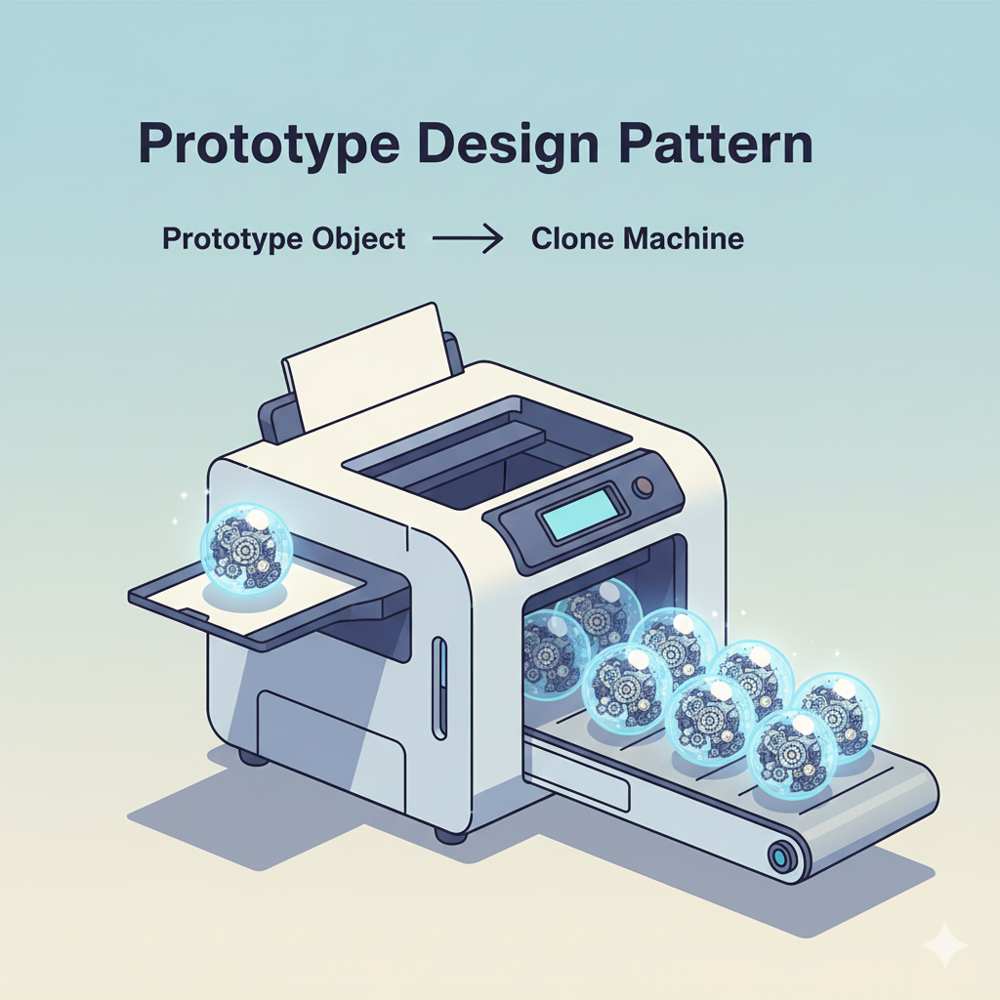
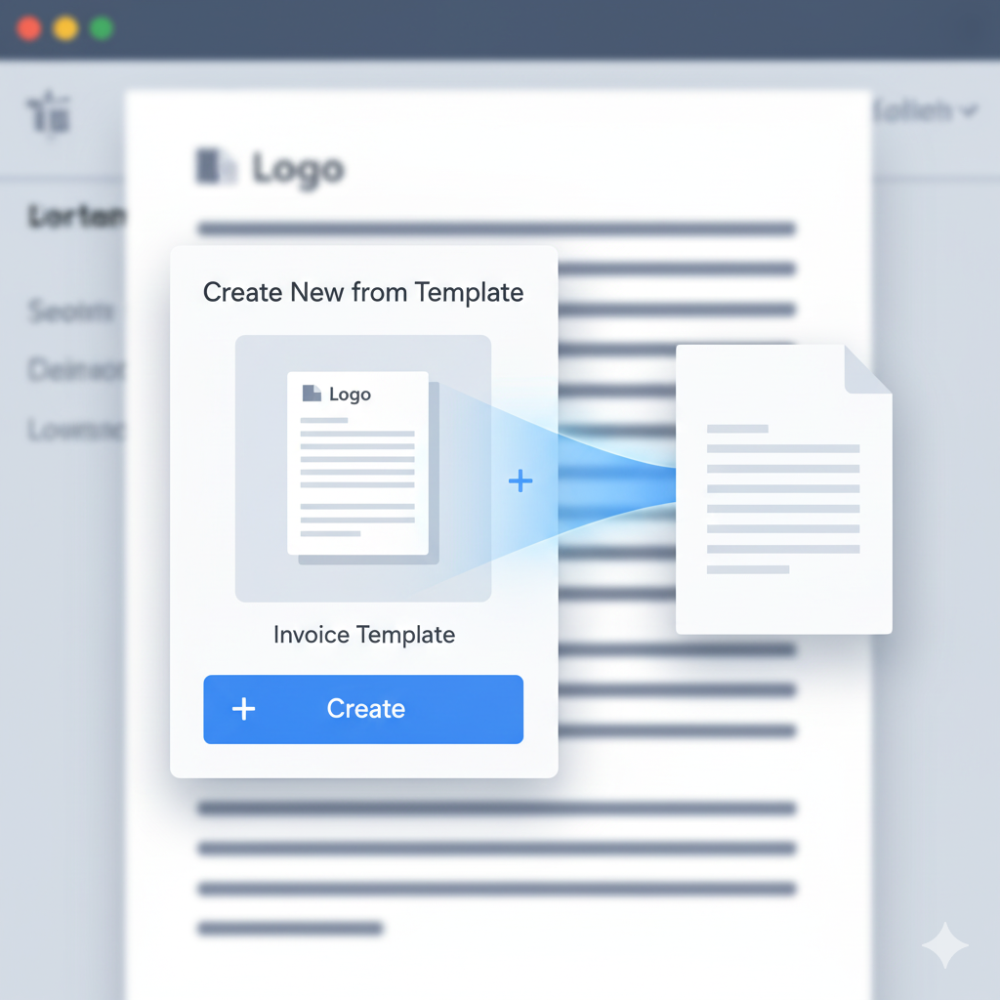
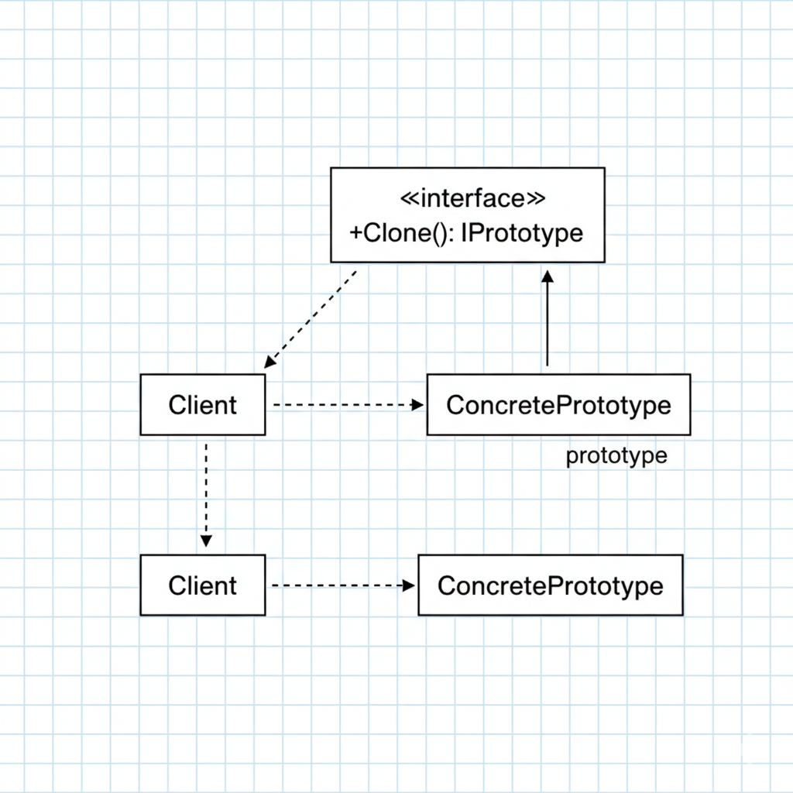

Introducción: El Arte de Copiar
¿Qué haces si crear un objeto es increíblemente "caro"? Imagina que para instanciar una clase NivelJuego, necesitas leer 500MB de disco, parsear un JSON complejo y conectarte a una base de datos para cargar el estado del jugador. Hacer new NivelJuego() tarda 10 segundos.
Ahora, ¿qué pasa si necesitas 5 copias de ese nivel para una simulación? ¿Esperar 50 segundos? Aquí es donde los patrones anteriores no son suficientes. No queremos *construir* un objeto nuevo; queremos *clonar* uno que ya existe.
El Patrón Prototype te permite crear nuevos objetos copiando una instancia existente (un "prototipo"), en lugar de crear el objeto desde cero.
Es el patrón de "Ctrl+C, Ctrl+V" para la Programación Orientada a Objetos. Se enfoca en la eficiencia cuando la inicialización es costosa.

Prompt: Ilustración conceptual que muestra un objeto 'prototipo' maestro siendo introducido en una fotocopiadora, de la que salen múltiples clones idénticos.
1. Mitosis: La Fábrica de la Vida
La naturaleza es la maestra de la eficiencia, y el patrón Prototype es su herramienta de cabecera. Cuando tu cuerpo necesita crear una nueva célula de piel, no va a un "Constructor de Células" a pedirle que "ensamble una célula nueva desde cero" con lípidos, proteínas y aminoácidos sueltos.
Ese proceso sería terriblemente lento e ineficiente. En su lugar, usa el Prototype: la mitosis.
- El Prototipo: Una
Célulaexistente y saludable. - El Método
Clone(): El proceso de mitosis. - El Resultado: Dos
Célulashijas idénticas.
El cuerpo simplemente toma una célula existente, duplica su configuración (el ADN) y la divide. Es infinitamente más rápido que construir una nueva desde sus componentes moleculares. La vida se basa en la clonación.
2. La Plantilla de Documento
En tu trabajo diario, usas el patrón Prototype constantemente. Cada vez que creas un documento nuevo en Word, Excel o Google Docs, probablemente no empiezas con una hoja en blanco.
Usas una plantilla.
- El Prototipo: El archivo "Plantilla_Factura.docx" o "Plantilla_Reporte_Semanal.xlsx". Este objeto ya está "construido" y "configurado" con el logo de la empresa, las fuentes correctas, el pie de página y las fórmulas.
- El Método
Clone(): Hacer clic en "Archivo" -> "Nuevo desde plantilla" (o "Guardar como..."). - El Resultado: Un documento nuevo, idéntico al prototipo, listo para que solo añadas los datos nuevos (el cliente, las horas trabajadas).
El "costo de construcción" (diseñar el layout, añadir el logo, configurar las fórmulas) se pagó *una sola vez*. Todas las creaciones futuras de objetos Factura son ahora casi instantáneas gracias a la clonación.

Prompt: Ilustración de una interfaz de software (como Word o Google Docs) mostrando la opción 'Crear desde plantilla', con una plantilla de 'Factura' siendo copiada.
3. Implementación en C# (Shallow vs. Deep Copy)
Aquí es donde el patrón se vuelve técnico y donde muchos desarrolladores cometen errores. Implementar Prototype en C# es fácil, pero implementarlo *correctamente* requiere entender la diferencia entre Shallow Copy (Copia Superficial) y Deep Copy (Copia Profunda).
Vamos a modelar un objeto ConfiguracionServidor que es costoso de crear.
3.1 El Objeto Prototipo y su Referencia
Nuestra configuración tiene datos simples (IP) y un objeto complejo de referencia (OpcionesAvanzadas).
/// <summary>
/// Un objeto de referencia. Esto es lo que causa problemas.
/// </summary>
public class OpcionesAvanzadas
{
public int Timeout { get; set; }
public string LogPath { get; set; }
}
/// <summary>
/// El Producto/Prototipo. Es "caro" de crear.
/// </summary>
public class ConfiguracionServidor
{
public string IpAddress { get; set; }
public OpcionesAvanzadas Opciones { get; set; }
// Constructor "CARO"
public ConfiguracionServidor(string ip)
{
IpAddress = ip;
// Simula una operación costosa (ej. leer de un archivo o DB)
Thread.Sleep(2000); // ¡Tarda 2 segundos!
Opciones = new OpcionesAvanzadas { Timeout = 120, LogPath = "/var/log/default.log" };
Console.WriteLine($"¡CONSTRUCTOR COSTOSO EJECUTADO! Config para {ip} creada.");
}
}3.2 El Error: Shallow Copy con MemberwiseClone
C# provee MemberwiseClone(), que es una forma rápida de hacer una copia superficial. Define una interfaz IPrototype para estandarizar.
public interface IPrototype<T>
{
T Clone();
}
public class ConfiguracionServidor : IPrototype<ConfiguracionServidor>
{
// ... (propiedades y constructor de antes) ...
// Constructor de copia privada para clonación
private ConfiguracionServidor(ConfiguracionServidor source)
{
// ... (lógica de copia) ...
}
/// <summary>
/// IMPLEMENTACIÓN 1: SHALLOW COPY (Peligrosa)
/// </summary>
public ConfiguracionServidor ShallowClone()
{
Console.WriteLine("Clonando (Shallow)...");
// MemberwiseClone copia los campos.
// Copia el valor de 'IpAddress' (string).
// Copia la *REFERENCIA* de 'Opciones' (OpcionesAvanzadas).
return (ConfiguracionServidor)this.MemberwiseClone();
}
// Método 'Clone' principal que usaremos (lo haremos Deep)
public ConfiguracionServidor Clone()
{
// Por ahora, lo dejaremos como shallow para ver el error
return ShallowClone();
}
}
// --- Cliente (Program.cs) ---
public class Program
{
public static void Main(string[] args)
{
Console.WriteLine("--- Creando prototipo original (costoso)... ---");
ConfiguracionServidor prototipo = new ConfiguracionServidor("192.168.1.1");
Console.WriteLine("\n--- Creando clon 1 (rápido)... ---");
ConfiguracionServidor clon1 = prototipo.ShallowClone();
// Modificamos el clon
clon1.IpAddress = "192.168.1.100";
clon1.Opciones.Timeout = 9999; // ¡Modificamos el objeto de referencia!
Console.WriteLine("\n--- Resultados ---");
Console.WriteLine($"ORIGINAL: IP={prototipo.IpAddress}, Timeout={prototipo.Opciones.Timeout}");
Console.WriteLine($"CLON 1: IP={clon1.IpAddress}, Timeout={clon1.Opciones.Timeout}");
}
}Resultado en Consola (¡EL ERROR!):
--- Creando prototipo original (costoso)... ---
¡CONSTRUCTOR COSTOSO EJECUTADO! Config para 192.168.1.1 creada.
--- Creando clon 1 (rápido)... ---
Clonando (Shallow)...
--- Resultados ---
ORIGINAL: IP=192.168.1.1, Timeout=9999
CLON 1: IP=192.168.1.100, Timeout=9999Como puedes ver, ¡modificar el Timeout del clon también modificó el prototipo original! Esto es un bug catastrófico. Ocurre porque ambos objetos apuntan a la *misma instancia* de OpcionesAvanzadas en memoria.
3.3 La Solución: Deep Copy (Copia Profunda)
Para solucionarlo, debemos implementar una copia profunda. Debemos clonar manualmente *todos* los objetos referenciados.
// Primero, hacemos que OpcionesAvanzadas también sea clonable
public class OpcionesAvanzadas : IPrototype<OpcionesAvanzadas>
{
public int Timeout { get; set; }
public string LogPath { get; set; }
public OpcionesAvanzadas Clone()
{
// String es inmutable, int es valor. MemberwiseClone es seguro aquí.
return (OpcionesAvanzadas)this.MemberwiseClone();
}
}
// Ahora, modificamos ConfiguracionServidor
public class ConfiguracionServidor : IPrototype<ConfiguracionServidor>
{
// ... (propiedades y constructor de antes) ...
// ... (ShallowClone de antes) ...
/// <summary>
/// IMPLEMENTACIÓN 2: DEEP COPY (Correcta)
/// </summary>
public ConfiguracionServidor DeepClone()
{
Console.WriteLine("Clonando (Deep)...");
// 1. Hacemos una copia superficial de los tipos valor/inmutables
ConfiguracionServidor clon = (ConfiguracionServidor)this.MemberwiseClone();
// 2. Clonamos manualmente todos los objetos de referencia
clon.Opciones = this.Opciones.Clone(); // ¡Esta es la línea clave!
return clon;
}
// El método Clone público ahora usa la versión Deep
public ConfiguracionServidor Clone()
{
return DeepClone();
}
}
// --- Cliente (Program.cs) - MISMO CÓDIGO DE ANTES ---
public class Program
{
public static void Main(string[] args)
{
Console.WriteLine("--- Creando prototipo original (costoso)... ---");
ConfiguracionServidor prototipo = new ConfiguracionServidor("192.168.1.1");
Console.WriteLine("\n--- Creando clon 1 (rápido)... ---");
ConfiguracionServidor clon1 = prototipo.Clone(); // Ahora llama a DeepClone
// Modificamos el clon
clon1.IpAddress = "192.168.1.100";
clon1.Opciones.Timeout = 9999;
Console.WriteLine("\n--- Resultados ---");
Console.WriteLine($"ORIGINAL: IP={prototipo.IpAddress}, Timeout={prototipo.Opciones.Timeout}");
Console.WriteLine($"CLON 1: IP={clon1.IpAddress}, Timeout={clon1.Opciones.Timeout}");
}
}Resultado en Consola (¡CORRECTO!):
--- Creando prototipo original (costoso)... ---
¡CONSTRUCTOR COSTOSO EJECUTADO! Config para 192.168.1.1 creada.
--- Creando clon 1 (rápido)... ---
Clonando (Deep)...
--- Resultados ---
ORIGINAL: IP=192.168.1.1, Timeout=120
CLON 1: IP=192.168.1.100, Timeout=9999¡Éxito! Ahora el clon es una entidad totalmente independiente. El prototipo original permanece intacto, que es el objetivo del patrón.
4. Prototype vs. Otros Patrones
Prototype vs. Factory Method
- Factory Method: Se enfoca en crear un objeto (
new) pero delega la decisión de *qué* clase concreta instanciar a las subclases. - Prototype: Se enfoca en clonar un objeto existente. No usa
new(excepto en la implementación de Deep Copy), sino que copia una instancia. - Combinación: Puedes tener un Factory Method que, en lugar de crear un objeto, clona un prototipo.
Prototype vs. Builder
- Builder: Construye un objeto complejo paso a paso. Es útil cuando necesitas diferentes configuraciones de un objeto.
- Prototype: Copia un objeto complejo de golpe. Es útil cuando necesitas múltiples copias de la misma configuración.
- Combinación: Puedes usar un Builder para crear tu objeto prototipo original (con la configuración perfecta y costosa) y luego usar Prototype para clonarlo 1000 veces.
5. Diagrama UML
El diagrama UML para Prototype es engañosamente simple, ocultando la complejidad del Deep Copy.
Oficialmente, el Patrón Prototype:
Especifica los tipos de objetos a crear usando una instancia prototípica, y crea nuevos objetos copiando este prototipo.
Los Actores del Patrón
- Prototype (
IPrototype): La interfaz que declara el método de clonación (ej.Clone()). - ConcretePrototype (
ConfiguracionServidor): La clase concreta que implementa el métodoClone(). Contiene la lógica para copiarse a sí misma (shallow o deep). - Client (
Program): El cliente obtiene una instancia de un ConcretePrototype y la clona para obtener nuevos objetos, sin saber cómo se clona o se construye.

Prompt: Diagrama UML claro del Patrón Prototype, mostrando un Client, una interfaz IPrototype (con método Clone) y una clase ConcretePrototype que la implementa.
⚠️ Cuándo NO Usar el Patrón Prototype
La clonación no es una bala de plata. A veces, new es simplemente mejor.
Evítalo Si...
- Los objetos son simples: Si la clase solo tiene tipos de valor (
int,string,bool) y el constructor es barato, usarnewes más limpio, más rápido y más legible. - La clase no "posee" sus datos: Si un objeto contiene referencias a servicios compartidos (ej. un logger, un socket de red, un manejador de base de datos), clonarlo puede ser desastroso. ¿Clonas la referencia (ahora dos objetos usan el mismo socket)? ¿O intentas clonar el socket (imposible)?
- La complejidad del Deep Copy es demasiado alta: Si tu objeto es un grafo gigante de referencias circulares, implementar un
DeepClone()correcto puede ser una pesadilla de código recursivo y seguimiento de referencias. En ese punto, es mejor refactorizar o usar un Factory.
💪 Ejercicio Práctico: Registro de Formas (Shape Registry)
Tu objetivo es crear una caché de "prototipos" para un programa de dibujo. Queremos tener formas base (un círculo rojo, un cuadrado azul) y poder crear copias de ellas rápidamente.
Requisitos
- Prototipos: Crea una interfaz
IShapePrototypecon un métodoClone()yDraw(). - Clases Concretas: Crea
CircleyRectangle. Dales propiedades (ej.Radius,Color,Width,Height). ImplementaClone()(¡Deep Copy si añades un objeto de referenciaPosition!). - El Registro (Registry): Crea una clase
ShapeRegistry.- Debe tener un
Dictionary<string, IShapePrototype>. - Un método
LoadPrototypes()que crea unCircley unRectanglebase y los guarda en el diccionario (ej. con claves "BigRedCircle", "BlueSquare"). - Un método
GetShape(string key)que devuelve un clon del prototipo almacenado.
- Debe tener un
- Cliente: Muestra cómo usar el registro para obtener "BigRedCircle", modificar su radio, y dibujarlo, probando que el prototipo original en el registro no fue modificado.
Conclusión: Copiar es más Rápido que Construir
El Patrón Prototype cambia nuestra mentalidad de "construcción" a "copia". Cuando el costo de new es prohibitivo, la clonación se convierte en una herramienta de optimización esencial.
Sin embargo, todo su poder se basa en una implementación correcta. Si te llevas una sola cosa de este artículo, que sea esto: cuidado con la copia superficial. Un MemberwiseClone() descuidado es una bomba de relojería que puede corromper el estado de tus prototipos originales.
Domina el Deep Copy, y habrás dominado el patrón Prototype.